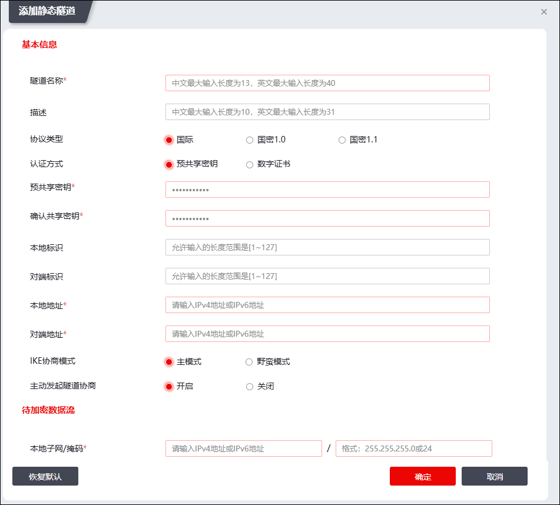

IPSec VPN静态隧道通过IKE（Internet Key Exchange，因特网密钥交换）自动地进行安全联盟建立与密钥交换而自动建立。本节介绍如何配置静态隧道。
要使NGFW能与其他网关设备成功建立IPSec VPN隧道，需要先执行如下步骤：
l开放物理接口所属区域的IPSecVPN服务，请参见 服务管理。
l如果静态隧道采用证书认证方式，则需要在NGFW上导入对端设备的证书，请参见 PKI。
| 步骤1 | 选择 。 |
| 步骤2 | 添加静态隧道。 |
1）点击『添加』，弹出“添加静态隧道”窗口。如下图所示。

2）配置静态隧道参数。
l基本信息
参数 |
说明 |
||
|---|---|---|---|
隧道名称 |
必填项，配置静态隧道的名称。 隧道名称最多不能超过（中文13、英文40）个字符，并且不能包含除“-”或“_”之外的特殊字符。 |
||
描述 |
输入静态隧道描述信息。 |
||
协议类型 |
选择隧道使用的协议类型。可选项：国际、国密1.0、国密1.1 说明：选择“国密1.0”和“国密1.1”时，认证方式固定为“数字证书”；“IKE协商模式”固定为“主模式”。 |
||
认证方式 |
认证方式 |
配置进行隧道协商时的身份认证方式。“协议类型”选择“国际”，支持“预共享密钥”和“数字证书”两种认证方式；“协议类型”选择“国密1.0”或“国密1.1”，认证方式固定为“数字证书”。 说明： “预共享密钥”认证方式是指隧道两端的网关通过口令密码来确认对方身份，因此隧道两端必须配置相同的预共享密钥；“数字证书”认证方式是指隧道两端的网关通过网关证书来确认对方身份。 |
|
预共享密钥 |
预共享密钥 |
必填项，配置隧道两端用于确认对方身份的口令密码。 说明： 当认证方式为“预共享密钥”时，必须配置该参数值。 |
|
确认共享密钥 |
再次输入预共享密钥。 说明： 当认证方式为“预共享密钥”时，必须配置该参数值。 |
||
本地标识 |
配置用于本地VPN网关搜索共享密钥文件的索引，必须与隧道对端的“对方标识”保持一致。 填写格式：@XXX或XXX@XXX（XXX为字母或数字）。 |
||
对端标识 |
配置用于对方VPN网关搜索共享密钥文件的索引。 当认证方式为“预共享密钥”时，需要手动输入对端标识，填写格式为：@XXX或XXX@XXX（XXX为字母或数字），且必须与隧道对端的“本地标识”保持一致。 |
||
数字证书 |
证书位置 |
点击【证书配置】在弹出的窗口中导入本机证书。 |
|
对端标识 |
对端标识设置有两种方式： 方式一：手工输入对端网关证书中的“subject”字段值；方式二：点击【获取标识】按钮，选择管理主机存储的数字证书文件，自动获取对方的标识信息。 |
||
本端接口 |
在下拉框中选择NGFW与对端设备建立静态隧道使用的接口。 |
||
本地地址 |
在下拉框选择NGFW与对端设备建立静态隧道使用的IP地址，该接口地址用于与隧道对端设备进行通信。 |
||
对端地址 |
设置隧道对端设备与NGFW建立隧道使用的接口的IP地址，NGFW与隧道对端设备该地址进行通信。 说明： 建立IPv4静态隧道时，本参数设置为IPv4地址，格式：x.x.x.x；建立IPv6静态隧道时，本参数设置为IPv6地址，格式：x:x:x:x:x:x:x:x。 |
||
IKE协商模式 |
配置在IKE协商时采用的协商模式。 可选项：主模式、野蛮模式。 说明： 1）主模式交换的消息为6个，占用更多的资源和时间。但它对身份信息的交换进行了加密，安全性比野蛮模式高。 2）野蛮模式交换的消息为3个，占用资源少，协商速度快。它相对于主模式来说更灵活，能支持协商发起端为动态IP地址的情况。但它以明文的方式传输身份信息，安全性不及主模式。 |
||
主动发起隧道协商 |
选择是否主动发起隧道协商。 可选项：开启、关闭。选择“开启”，则该隧道本端主动发起协商；选择“关闭”，则隧道本端不主动发起协商。 说明： 只要有一端设备配置了主动发起协商，隧道就可以自动进行协商；如果隧道两端设备均不主动发起协商，则可以通过点击“协商”图标手动发起协商。 |
||
l待加密数据流
参数 |
说明 |
|---|---|
源地址/源地址掩码 |
配置静态隧道保护的本地子网地址/掩码。 说明： 本地子网与对方子网的数据报文通信时，通过该静态隧道对数据报文进行保护。 |
目的地址/目的地址掩码 |
配置静态隧道保护的对端网关的子网地址/掩码。 说明： 本地子网与对方子网的数据报文通信时，通过该静态隧道对数据报文进行保护。 |
反向路由优先级 |
IPsec SA建立后，NGFW自动生成到达IPsec VPN对端保护子网的静态路由，“反向路由优先级”参数用于配置自动生成的静态路由的优先级。如果路由转发表中有多条目的地址相同优先级不同的静态路由，优先级数值小的路由优先级更高。 说明： 1）随IPsec SA的创建而自动生成的静态路由，随IPsec SA的删除而删除，选择 ，可查看自动生成的静态路由。IPv4静态路由优先级的取值范围：1~32,766，默认值：60 ；IPv6静态路由优先级的取值范围：257~32,766，默认值：2048。 2）IPSec VPN静态隧道的“本端接口”设置为IPSec虚接口时，方可配置该参数。 |
l安全提议
参数 |
说明 |
|---|---|
IKE SA协商重试次数 |
配置IKE协商不成功时的最大重试次数，超过该次数不再发起协商。 取值范围：1-100；默认值：3。 |
ISAKMP-SA存活时间 |
配置IKE 安全联盟（SA）的生存时间，超过该时间则需要重新协商新的SA。 单位：秒；取值范围：1-86400秒；默认值：86400秒。 |
ISAKMP-SA的安全政策属性 |
在进行IKE安全协商时需要指定ISAKMP-SA安全政策属性。 加密算法支持：3DES、AES、DES；校验算法支持：MD5、SHA1；DH交换值支持：DH1、DH2、DH5。 说明： 一条静态隧道可以添加多个ISAKMP-SA安全政策属性。 |
ESP加密算法 |
进行信息加密传输时，需要指定ESP加密算法提议列表，可选项随协议类型变化。 |
ESP校验算法 |
进行信息加密传输时，需要指定ESP校验算法提议列表，可选项随协议类型变化。 |
安全协议 |
定义对IP数据包提供何种保护，安全协议支持：ESP、AH、隧道模式。 说明： 一条静态隧道可以设置多个IPSEC-SA的安全政策属性。 |
IPSec-SA存活时间 |
IPSEC安全联盟的生存时间。 单位：秒；取值范围：1-260000；默认值：28800。 |
DPD |
选择是否启用对端失效检测功能（Dead peer detection），该功能用于检测VPN另一端网关是否失效。 可选项：启用、不启用；默认值：启用。 |
DPD间隔 |
配置进行DPD查询的时间间隔，即经过该段时间间隔没有收到对端网关的IPSec报文，就进行一次DPD请求。 单位：秒；取值范围：1-3600；默认值：30。 |
DPD超时时间 |
等待对端网关DPD应答报文的超时时间，即：发送DPD请求报文后，如果超过此处设定的超时时间仍然没有收到对端网关正确的DPD应答报文，就表示对端网关不在线。 单位：秒；取值范围：1-28800；默认值：300。 |
3）（可选）点击【恢复默认】按钮，配置的参数恢复系统出厂配置，点击【确定】按钮完成IPSec静态隧道的添加，此后，NGFW将自动进行IPSec VPN静态隧道的协商。